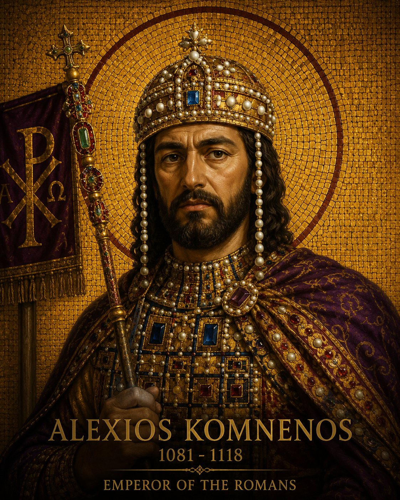
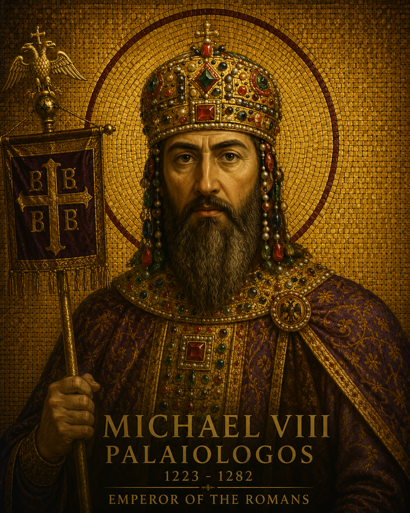

Principais Imperadores
Ao longo de mais de mil anos, o Império Bizantino foi moldado por imperadores que enfrentaram crises, guerras e transformações profundas. Conheça quatro figuras que definiram os rumos de Bizâncio — do seu apogeu até o seu último sopro.
Basílio II
"O Matador de Búlgaros"Representa o ápice militar do império medieval. Basílio II estabilizou as fronteiras e expandiu o território bizantino a níveis não vistos desde Justiniano, subjugando completamente o Império Búlgaro após a Batalha de Kleidion.
Deixou os cofres do Estado repletos e as fronteiras se estendendo até o Rio Danúbio e partes da Armênia. Seu reinado de quase cinquenta anos foi o mais longo e próspero da dinastia macedônica.


Alexios Komnenos
Fundador da Dinastia ComnenaAssumiu o trono em um momento de colapso absoluto, logo após a desastrosa derrota na Batalha de Manziquerta para os turcos seljúcidas. Com diplomacia cirúrgica, reorganizou as finanças e conteve os normandos.
Apelou ao Ocidente por ajuda militar, o que se tornou o estopim para a Primeira Cruzada — um movimento que Alexios esperava controlar, mas que rapidamente escapou às suas mãos.
Michael VIII Palaiologos
O RestauradorApós Constantinopla ter sido violentamente saqueada e ocupada por cruzados ocidentais em 1204, Michael liderou o Império de Niceia na reconquista triunfante da capital em 1261, refundando a dinastia dos Palaiologos.
Sua vitória devolveu a Bizâncio sua capital histórica, embora o império restaurado nunca mais atingisse o esplendor anterior ao saque latino.


Constantine XI Palaiologos
O Último Imperador RomanoGovernou um império fantasma que se resumia quase que exclusivamente à cidade sitiada de Constantinopla. Recusou as ofertas otomanas de rendição e escolheu defender as muralhas com os poucos que restavam.
Em 29 de maio de 1453, com a queda da cidade diante do exército de Maomé II, Constantino XI morreu combatendo — encerrando mais de mil anos de história imperial romana no Oriente.